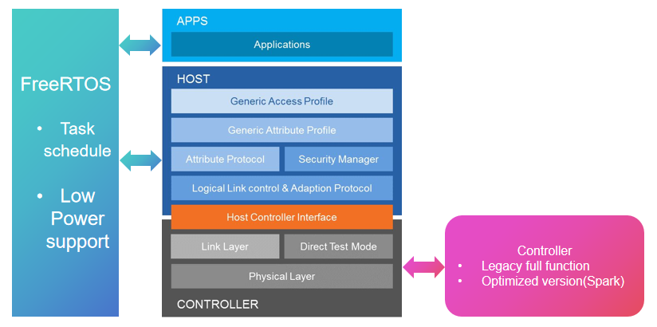

NDK 整体框架介绍¶
1 简介¶
PAN107x NDK 的 SDK 部分基于开源蓝牙协议栈 Nimble(Host)、开源实时操作系统 FreeRTOS 以及 Panchip 私有 BLE Controller 实现的。Nimble 和 FreeRTOS 均开放源码，BLE Controller 通过标准化 HCI 接口实现。需要注意的是本 SDK 依赖的开发环境 (IDE) 为 Keil v5。

NDK整体结构¶
2 SDK 目录结构¶
PAN107x NDK 的 SDK 部分源码树结构如下：
<home>/01_SDK
├── modules
│ └── hal
└── nimble
├── README.md
├── component
├── config
├── controller
├── host
├── lib
├── os
├── profiles
├── scripts
├── soc
├── utilities
└── samples
moudules/hal：与ZDK同根同源，属于外设和driver相关的硬件抽象层README.md：nimble基本介绍component: 磐启提供的开箱即用的通用组件controller：BLE Controller 头文件host：Nimble 源文件 + 磐启适配层源文件lib：BLE Controller 或者2.4G或者其他库文件os: FreeRTOS 源文件 + 磐启OS 适配层源文件profiles： 目前磐启支持的BLE profiles文件scripts: 一些有用的脚本文件soc: Soc通用接口源文件 ,例如： system clock初始化、FT Load、PM driver等utilites: 磐启提供的一些方便但很难分类的函数接口，例如：数据打包和拆包、mac address 加载、FressRTOS一些函数和宏的包装、中断临界保护以及一些杂项函数samples:磐启提供的demo工程，例如：蓝牙demo、MCU外设demo、PM demo、sub-1G demo等
2.1 modules¶
modules在NDK中主要为外设以及USB，2.4G等依赖的库文件
<home>/01_SDK/modules
.
└── hal
└── panchip
└── panplat
└── pan1070
└── bsp
├── cmsis
├── device
├── peripheral
├── radio
└── usb
2.2 component¶
为了方便用户使用， NDK提供了组件文件夹用于存放一些开箱即用的组件。目前有如下组件可用：
ble_dev_filter
ble device filter 提供了一套简单易用的API，用于设备作central role时，从adv report中过滤出用户关心的设备，从而建立连接或者做其他处理。
ble device filter 组件提供了如下过滤功能：
过滤设备Name
过滤RSSI
过滤一个或者多个设备address
过滤设备address type
过滤16bits UUID
过滤128bits UUID
过滤制造商特定数据
ble device filter支持两种过滤mode
Single mode - 多个过滤条件只要一个满足即认为有效
All mode - 多个过滤条件必须同时满足才认为有效，
这是default mode
具体用法可以参看ble_central工程。app_timer
app_timer 组件提供了一套简单易用的timer API，它是基于32k sleep timer来实现的，精度高。
app_timer使用之前需要调用app_timer_init()函数对app_timer系统进行初始化
app_timer使用时需要注意：
app_timer使用了sleep timer channel 1中断，因此，用户应用中不能使用sleep timer channel 1
由于app_timer的timeout回调是在中断中执行的，因此，应用时要注意 timeout 回调函数应尽量短小精悍
sleep timer的中断优先级可能会影响app_timer的定时精度（优先级低可能被其他中断打断），使用时需要根据实际应用调整sleep timer 中断优先级。
app_timer的用法可以参看app_timer.c文件下的test用例。
app_log
NDK中提供了一套log系统，方便用户使用
app_log 组件功能
支持
DEBUG/INFO/WRN/ERRORlog level，用户可以在sdk_config.h中配置log level支持 trace info的输出，用户可以在sdk_config.h中配置Enable/Disable, trace信息包含了log输出的具体位置。
支持log level target的输出，用户可以在sdk_config.h中配置Enable/Disable
支持 UART和RTT，用户可以在sdk_config.h中配置Enable/Disable
app_assert
NDK提供了通用的断言组件供用户使用。断言主要应用于对参数的检查和函数返回值的检查中，如果出现异常可以让程序停住并输出异常原因。
app_fifo
app_fifo 组件提供了一套类似 ringbuffer 功能的程序，但是其执行效率比 ringbuffer 快，代码量更小，无依赖。
app_fifo组件的功能及使用要点：
app_fifo提供了一套高效的方法对一个连续内存进行管理
app_fifo要求内存大小必须是2的n次幂 ，例如： 2,4,8,16,32…
ringbuffer
ringbuffer 组件提供了一种常规的循环buffer接口。
sort_queue
sort_queue 组件提供了一套自动排序的queue API, 主要用于对数据有排序要求的场景， app_timer组件就使用了sort_queue。
Sort_queue的具体用法可以参看app_timer或者sort_queue.c下的测试程序。mem_mng
mem_mng 组件提供一套通用的memory 管理API，目前暂时是通过包装OS memory管理函数实现，后面我们慢慢实现自己的mem_mng组件，但是API接口将保持不变，保证后续的兼容性。
kv_store
kv_store 提供了一套通用的Flash 管理的API，主要用于存储system运行参数，用户数据等。 目前kv_store组件使用的是开源的。
随着时间的推移，我们将不断增加组件，节省用户开发时间。
2.3 controller¶
controller中主要包含了BLE controller相关头文件和RF test相关的文件。 为了方便用户使用ble controller的接口函数，将controller头文件集中在pan_ble_controller.h文件中，用户如果要使用ble controller的接口，直接包含该文件即可。
<home>/01_SDK/nimble/controller
.
├── rf_test
├── pan_ble_controller.h
└── pan107x_spark
└── include
2.4 host¶
host中包含nimble的源代码以及其他必须的组件。
<home>/01_SDK/nimble/host
.
├── smp_bt
│ ├── app_smp
│ ├── mcumgr
│ ├── os_smp
│ └── tinycbor
└── nimble
├── CODING_STANDARDS.md
├── LICENSE
├── NOTICE
├── README.md
├── RELEASE_NOTES.md
├── apps
├── babblesim
├── docs
├── ext
├── nimble
├── porting
├── repository.yml
├── targets
├── uncrustify.cfg
└── version.yml
smp_bt:OTA相关的实现文件，该模块实现了基于SMP service的OTA固件升级协议，可以通过NRF connect app进行固件升级。
nimble：参考nimble专页介绍，NDK使用的nimble版本是
v1.5.0
2.5 lib¶
lib中主要包含了controller库文件:
<home>/01_SDK/nimble/lib
.
├── pan101x_spark
| └── ble_spark_101x.lib
└── pan107x_spark
├── ble_spark_107x.lib
└── ble_spark_107x_rd.lib
目前NDK中BLE Controller支持pan101x/pan107x系列芯片。pan107x提供了两个lib，其中带"rd"字样的lib是RAM优化版本，用于对功耗要求不高，但是需要较多RAM空间的情况，目前ble_mulit_role demo工程使用了该库。
2.6 profiles¶
profiles中包含了蓝牙官方定义以及磐启自定义的BLE service的具体实现，目前可用的profiles如下：
<home>/01_SDK/nimble/profiles
.
└── profles
├── acc
├── ans
├── bas
├── dis
├── gap
├── gatt
├── gw
├── hid
├── hrs
├── hts (待实现)
└── uart_spp
2.7 samples¶
nimble示例工程：
<home>/01_SDK/nimble/samples
.
└── samples
├── bluetooth
│ ├── ble_central_periph
│ └── ...
└── solutions
├── ble_hid_selfie
└── ...